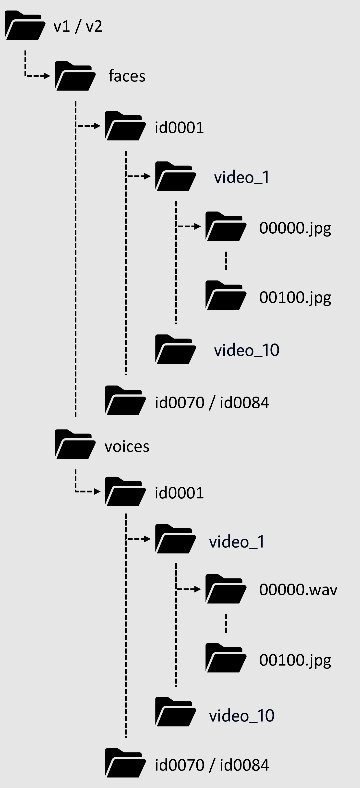

The face and voice of a person have unique characteristics and they are well used as biometric measures for person authentication either as a unimodal or multimodal. A strong correlation has been found between face and voice of a person, which has attracted significant research interest. Though previous works have established association between faces and voices, none of these approaches investigated the effect of multiple languages on this task. As half of the population of world is bilingual and we are more often communicating in multilingual scenarios, therefore, it is essential to investigate the effect of language for associating faces with the voices. Thus, the goal of the Face-voice Association in Multilingual Environments (FAME) 2026 challenge is to analyze the impact of multiple languages on face-voice association task. For more information on challenge please see evaluation plan.
DATASET
Our dataset comprises three versions: MAV-Celeb v1 and v3, each containing distinct (non-overlapping) speaker identities. MAV-Celeb v1 includes audiovisual data of speakers using English and Urdu, and v3 extends the dataset with English and German speakers.
The dataset is available at the following links:
To view the meta-data for the dataset, see the files below:
The file structure is as follows:
BASELINE MODEL
We provide a baseline model that has been trained on extracted features for facial and
audio data (vggface for images and utterance level aggregator for voices). To learn a discriminative
joint face-voice embedding for F-V association tasks, we develop a new framework for crossmodal face-voice
association (See Fig. 1) that is fundamentally a two-stream pipeline and features a light-weight
module that exploits complementary cues from both face and voice embeddings and facilitates discriminative identity
mapping via orthogonality constraints
Link to the paper:
Fusion and Orthogonal Projection for Improved Face-Voice Association
Link to the Paper's code:
https://github.com/msaadsaeed/FOP
Link to the Baseline code:
https://github.com/mavceleb/mavceleb_baseline
Figure 1: Diagram showing our methodology.
TASK
Cross-modal Verification
Face-voice association is established in cross-modal verification task. The goal of the cross-modal verification task is to verify if, in a given single sample with both a face and voice, both belong to the same identity. In addition, we analyze the impact of multiple of languages on cross-modal verification task.
Figure 2: (Left) F-V association is established with a cross-modal verification task. (Right) The FAME 2026 Challenge extends the task to analyze the impact of multiple languages.
EVALUATION METRICS
We are considering Equal Error Rate (EER) as the metric for evaluating the challenge performance. We expect the challenge participants to submit a output score file for every test pairs to indicate how confident the system believes to have a match between the face and voice or in other words, the face and voice belongs to the same person. The higher the score is, the larger is the confidence of being the face and voice from the same person. In real-world applications, people may set a threshold to determine the if the pair belongs to same or different person as binary output. With the threshold higher, the false acceptance rate (FAR) will become lower, and the false rejection rate (FRR) will become higher. The EER is that optial point when both the errors FAR and FRR are equal. Therefore, EER becomes suitable to evaluate the performance of systems than the conventional accuracy since it independent of the threshold. Finally, the lower the EER it can characterize a better system. For more information please see evaluation plan.
SUBMISSION
Within the directory containing the submission files, use zip archive.zip *.txt and do not zip the folder. Files should be named as:
- sub score English heard.txt
- sub score English unheard.txt
- sub score Urdu heard.txt
- sub score Urdu unheard.txt
We provide both train and test splits for v3 of MAV-Celeb dataset. Participants can use this split for fine-tuning their method. However, for v1 the test files are in format as below:
- ysuvkz41 voices/English/00000.wav faces/English/00000.jpg
- tog3zj45 voices/English/00001.wav faces/English/00001.jpg
- ky5xfj1d voices/English/00002.wav faces/English/00002.jpg
- yx4nfa35 voices/English/01062.wav faces/English/01062.jpg
- bowsaf5e voices/English/01063.wav faces/English/01063.jpg
- ysuvkz41 0.9988
- tog3zj45 0.1146
- ky5xfj1d 0.6514
- yx4nfa35 1.5321
- bowsaf5e 1.6578
Overall Score = (Sum of all EERs) / 4
REGISTRATION
We welcome participants to apply for the “FAME Challenge 2026” by expressing their interest via google forms at this link.
For any queries please contact us at our email mavceleb@gmail.com.
TIMELINE
ORGANIZERS
Marta Moscati -
Institute of Computational Perception, Johannes Kepler University Linz, Austria
Ahmed Abdullah -
National University of Computer and Emerging Sciences, Pakistan
Muhammad Saad Saeed -
University of Michigan, USA
Shah Nawaz -
Institute of Computational Perception, Johannes Kepler University Linz, Austria
Rohan Kumar Das -
Fortemedia Singapore, Singapore
Muhammad Zaigham Zaheer -
Mohamed bin Zayed University of Artificial Intelligence, United Arab Emirates
Junaid Mir -
University of Engineering and Technology Taxila, Pakistan
Muhammad Haroon Yousaf -
University of Engineering and Technology Taxila, Pakistan
Khalid Malik -
University of Michigan, USA
Markus Schedl -
Institute of Computational Perception, Johannes Kepler University Linz, Austria | Human-centered AI Group, AI Lab, Linz Institute of Technology, Austria